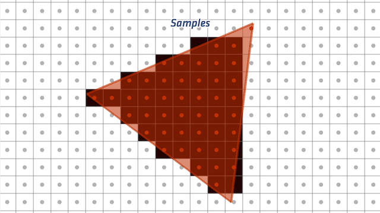
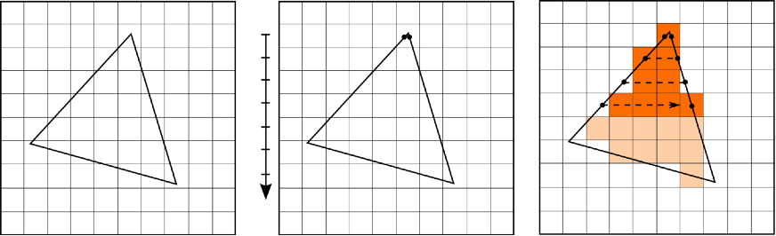
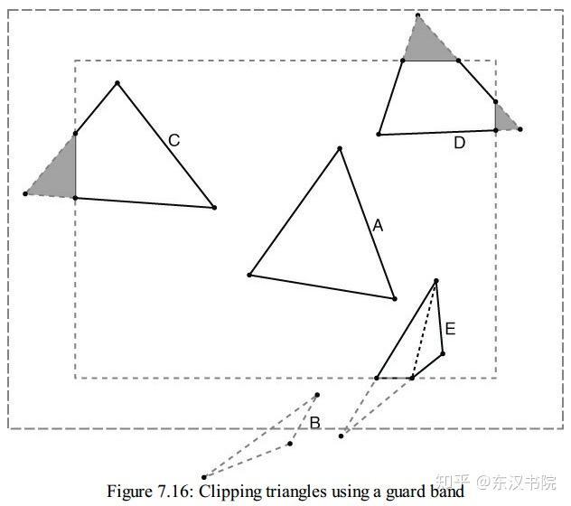

Rasterization：三角形變成一格格像素
- 知道光柵化 = 把三角形「填」成一格格片段（fragment ≈ 像素）
- 會算一個片段的內插值（就是加權平均，不難）
- 知道 Cull / Clip 分別由誰做、在哪個階段把看不到的東西丟掉
- 看懂 Clipping 怎麼把「跨出邊界」的三角形切開重組
先看：怎麼把三角形填滿

Vertex Shader 算完頂點位置後，三角形還只是「3 個角」。 Rasterization（光柵化）就是把三角形涵蓋到的每個像素位置，變成一個 Fragment（片段）—— 帶著位置、顏色、深度、UV 等資訊，準備送去上色。
片段的資料哪來的？內插

輸入只有 3 個頂點，但中間有成千上萬個像素。GPU 用內插（Interpolation）補出中間值：
越靠近哪個頂點，就越像那個頂點的值。所以第 4 課 Vertex Shader 用 varying 傳出的 UV、顏色、法線，
到了這裡會被內插，變成每個片段各自的值 —— 下一課 Fragment Shader 就吃這些。
用數字看一次（沿一條邊）
拿一條邊上的兩個頂點，一個是紅、一個是綠，中間的片段就是兩端「按比例混」出來的：
頂點 A = 紅 (1, 0, 0) 頂點 B = 綠 (0, 1, 0)
正中間的片段 → 各一半 = (0.5, 0.5, 0) 偏黃
靠 A 那端 1/4 處 → 紅佔 3/4 = (0.75, 0.25, 0) 偏紅寫成一行公式（不嚇人，就是加權平均）：
片段值 = A × (1 − t) + B × t // t = 從 A 走到 B 的比例（0～1）
t = 0 就完全是 A、t = 1 就完全是 B、t = 0.5 剛好一半一半。
這條 A×(1−t) + B×t 是圖學裡到處都是的「lerp（線性內插）」。
順手丟掉看不到的：Culling & Clipping
在真正填成片段之前（甚至更早），管線會把「反正看不到」的東西先丟掉，省得白算。 這裡有三個技術，分別由不同的人、在不同階段動手：
Cull + Clip 和 Rasterization 中間，還悄悄夾了一步：Perspective Division（透視除法）。
還記得第 4 課每個頂點都是 vec4、有第 4 個分量 w 嗎？
投影那步偷偷把「這個頂點離相機多遠」存進了 w。
GPU 在這裡自動把 x, y, z 都除以 w —— 也就是除以距離：
近的頂點：x=2, w=2（距離 2）→ x/w = 1.0
遠的頂點：x=2, w=8（距離 8）→ x/w = 0.25 ← 同樣的 x，遠的變小除以越大的數、結果越小 → 遠的東西自動縮小，這就是「近大遠小」真正發生的瞬間（第 3 課透視投影的效果，就是這裡做出來的）。 做完除法，座標就收斂成標準化的 NDC、再對應到螢幕像素——所以光柵化是在螢幕座標上填的。 這步是 GPU fixed-function 硬體自動完成，免費，你不用寫任何程式。
| 技術 | 誰做 | 哪個階段 | 丟掉什麼 |
|---|---|---|---|
| Frustum Culling | CPU | Application（進 GPU 前） | 視野外的整個物件，根本不送 GPU |
| Back Face Culling | GPU 硬體 | 進 Rasterization 前 | 背對相機的三角形面（用繞序判斷正/背面） |
| Clipping | GPU 硬體 | 進 Rasterization 前 | 跨出視野邊界的部分（切開重組） |
Clipping：把跨出邊界的三角形切開
一個三角形常常不是「整個看得到」或「整個看不到」，而是一半在畫面內、一半在外。 這時 GPU 不能整個丟（內側那半還要畫），也不能整個留（外側超出範圍）， 做法是在邊界切一刀：外面切掉丟棄，裡面剩下的形狀重新組成新的三角形，再送進 Rasterization。

快速確認
Q1 一條邊上，Vertex A 的 UV.u = 0.2、Vertex B 的 UV.u = 1.0。
從 A 往 B 走到 3/4 的片段，內插出的 u = ?
（提示：u = A×(1−t) + B×t，t = 3/4）
Q2 下面三句，哪一句是錯的？
Q3 一個新模型丟進場景，發現它的正面完全看不到、背面反而看得到。最可能是什麼？
原始資料 / 延伸閱讀
- 本課改寫自 遊戲繪圖_00_電腦圖學.md（光柵化段）+ 遊戲繪圖_07_Culling&Clipping.md
- 推薦閱讀：Scratchapixel — Rasterization Stage
物件消失、面破洞這類問題想追下去，問你的教學 agent（/teach）。